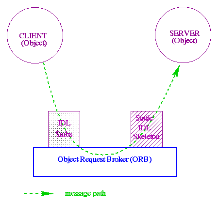
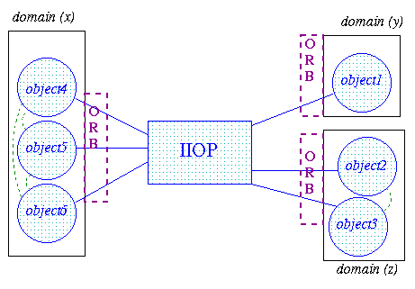

3 The Orber Application
3.1 ORB Kernel and IIOP
This chapter gives a brief overview of the ORB and its relation to objects in a distributed environment and the usage of Domains in Orber. Also Internet-Inter ORB Protocol (IIOP) is discussed and how this protocol facilitates communication between ORBs to allow the accessory of persistent server objects in Erlang.
3.2 The Object Request Broker (ORB)
An ORB kernel can be best described as the middle-ware, which creates relationships between clients and servers, but is defined by its interfaces. This allows transparency for the user, as they do not have to be aware of where the requested object is located. Thus, the programmer can work with any other platform provided that an IDL mapping and interfaces exist.
The IDL mapping which is described in a later chapter is the translator between other platforms, and languages. However, it is the ORB, which provides objects with a structure by which they can communicate with other objects.
ORBs intercept and direct messages from one object, pass this message using IIOP to another ORB, which then directs the message to the indicated object.
An ORB is the base on which interfaces, communication stubs and mapping can be built to enable communication between objects. Orber uses domainsto group objects of different nodes
How the ORB provides communication is shown very simply in figure 1 below:
Figure 3.1: Figure 1: How the Object Request Broker works.
The domain in Orber gives an extra aspect to the distributed object environment as each domain has one ORB, but it is distributed over a number of object in different nodes. The domain binds objects on nodes more closely than distributed objects in different domains. The advantage of a domain is that a faster communication exists between nodes and objects of the same domain. An internal communication protocol (other than IIOP) allows a more efficient communication between these objects.
Unlike objects, domains can only have one name so that no communication ambiguities exist between domains.
3.3 Internet Inter-Object Protocol (IIOP)
IIOP is a communication protocol developed by the OMG to facilitate communication in a distributed object-oriented environment.
Figure 2 below demonstrates how IIOP works between objects:
Figure 3.2: Figure 2: IIOP communication between domains and objects.
Within the Orber domains the objects communicate without using the IIOP. However, the user is unaware of the difference in protocols, as this difference is not visible.